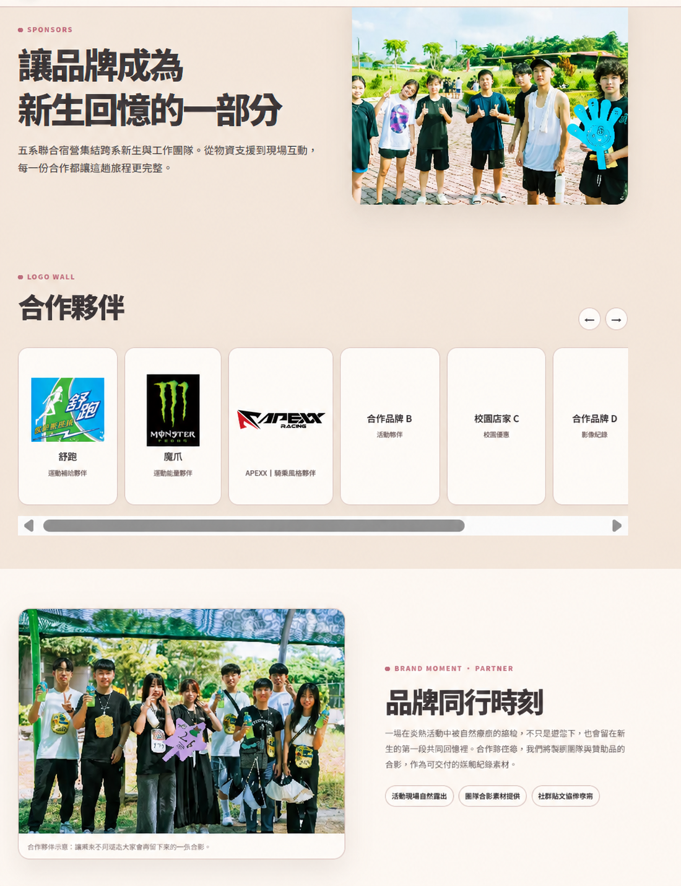

核心合作邀請贊助商品待確認
我們希望以適合新生騎乘日常的商品，作為抽獎、宣傳或活動互動資源；實際品項由 APEXX 自行評估後填寫。
建議贊助商品＿＿＿＿＿＿＿＿＿＿＿＿
商品規格、數量、使用方式與露出內容，均以 APEXX 最終確認為準。PRIVATE PROPOSAL
國立中山大學・五系聯合迎新宿營
邀請 APEXX 為五系新生的校園移動注入更多自信


WHY APEXX
中山大學校園與周邊坡道多，機車是許多新生往返校園、生活圈與山海之間的重要工具。APEXX 的機車風格部品能讓日常騎乘更貼近個人的需求，也讓探索新生活的路上多一份自在。
前往 APEXX 官方網站 ↗我們希望以適合新生騎乘日常的商品，作為抽獎、宣傳或活動互動資源；實際品項由 APEXX 自行評估後填寫。
PARTNERSHIP PROPOSAL
優先合作方案
| 合作項目 | 主辦方交付 | 可共同討論 | 回報憑據 |
|---|---|---|---|
| 贊助商品 | 依最終品項安排抽獎、宣傳或現場互動。 | ＿＿＿＿＿＿＿＿＿＿＿＿ | 發放紀錄與現場照片。 |
| 活動官網 | 合作頁放置 APEXX Logo、官方連結與核可後的簡短介紹。 | Logo 檔、連結與上線前審核。 | 上線截圖與網址。 |
| Instagram 合作內容 | 發布 1 則核可內容，並於合適環節致謝。 | 素材、標記帳號與文案規範。 | 貼文連結與限時動態截圖。 |
| 成果結案 | 活動後 14 日內整理合作執行摘要與公開紀錄。 | 指定收件窗口與成果欄位。 | 結案 PDF、照片與公開連結。 |

感謝 APEXX 成為五系新生的騎乘風格夥伴
Instagram 合作貼文模擬｜內容可依品牌確認調整EXECUTION & SAFETY
破冰、夜教、宵夜
校園內集合與活動，隊輔帶領、點名與安全說明。走馬瀨大地遊戲、水大地、晚會
抽獎與合作夥伴致謝可安排於晚會等合適環節。結業、團隊活動、安平探索
戶外活動與移動前皆完成安全說明，結束後返抵中山大學。飲用水、急救箱、點名與醫療聯絡表全程配置。各活動前完成安全說明與器材檢查。
雨勢、高溫或重大事件依校方、場地方與政府指示調整。
抽獎與宣傳不影響活動安全與參與者隱私。所有對外品牌文字皆經確認後發布。
NEXT STEP
若 APEXX 願意評估本案，我們將依品牌回覆確認贊助商品、素材與交付項目，並提供最終執行版本。